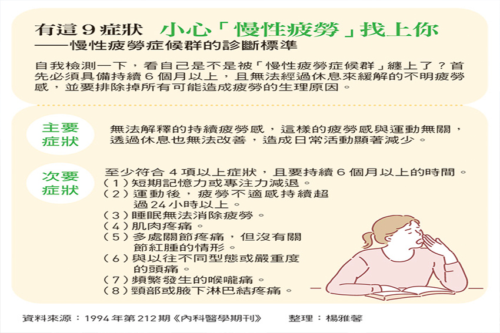

平日睡不夠、假日狂補眠 想消疲勞卻愈睡愈累？
「慢性疲勞症候群（Chronic Fatigue Syndrome）之所以稱為『症候群』，代表著同時混雜生理與心理症狀，且是無論怎麼休息都沒辦法恢復元氣。」林口長庚醫院精神科主治醫師、台灣憂鬱症防治協會理事長張家銘表示，疲勞是結果，但原因可能是過度勞累、營養不夠、休息不足，還有許多疾病都會造成疲勞的現象。
振興醫院精神醫學部主治醫師袁瑋也表示，慢性疲勞症候群在臨床上並不容易診斷，而檢查不出原因的結果，常導致病人身旁的支持者無法理解，也是罹病者感到最無奈的地方。
|  |
憂鬱症還是壓力大？
一九九四年，美國疾病管制局提出新的診斷方式，若病人 符合附表中的主要症狀，並至少有四項或四項以上的次要症狀， 即可診斷為慢性疲勞症候群。對此，張家銘說明，慢性疲勞真正的定義是「病人長期受疲勞之苦，卻又找不到任何病因的疾病」，通常建議病人先到家醫科、內科就診，確認沒有任何生理問題，再來評估是否與情緒、心理有關。
在心理方面，憂鬱症、廣泛性焦慮症等患者，也可能表現出長期疲憊的狀態，但慢性疲勞症候群不一定有負面想法，也未必對事物不感興趣。然而，在常見的生理症狀如肌肉疼痛、頭痛等，卻同樣也會出現在憂鬱症患者身上。
不開心就靠運動紓壓？
面對無法消除的疲勞，該怎麼辦？袁瑋表示，若確定是慢性疲勞，可透過運動改善，但最好採取漸進式運動，而不是每次都去跑個五公里、狂運動，最好能找有合格證照的教練、物理治療師教你如何正確運動。
「慢性疲勞與壓力有很大的關係，請試著找出自己的壓力源。」袁瑋進一步提醒，要先釐清這些壓力是自己造成，還是源自外在環境？又該如何調整？
喝能量飲來提振精神？
能量飲料常見成分包括咖啡因、維他命B 群、牛磺酸等，其中主成分咖啡因，對交感神經有刺激作用， 這些物質都只具短暫提神效果，要改善疲勞還是得從「均衡健康飲食」做起。
假日補眠打亂生理時鐘？
「現代人要戰鬥，也要學會休息，不要一直處在戰鬥與工作狀態，要給自己休息與放鬆的時間。」張家銘苦口婆心地說，平日就該養成良好睡眠習慣，畢竟睡眠才是減輕「身體疲勞」與「精神疲勞」最有效的方法。
-----------------------------------------------------------------------------------------------------------------------------------------
【相關檢測】
腎上腺皮質荷爾蒙分析(血液) Adrenocortex Stress Profile (Blood)
維生壓力會促使腎上腺皮質製造的皮質醇量增加。長期壓力則會導致焦慮、憂鬱、記憶力衰退、癒合能力受損、肌肉與組織退化、血糖代謝不良、肥胖、心血管疾病、免疫失調等。此分析可評估腦下垂體促腎上腺皮質素(ACTH）、腎上腺皮質軸(HPA axis) 中樞神經內分泌平衡狀況。瞭解 DHEA 、皮質醇分泌量與抗壓能力，可反應出身體承受壓力的狀態。目前陽光活力診所可提供血液中腎上腺皮質荷爾蒙分析之相關評估，有興趣者請洽諮詢專線(02)8797-3828。